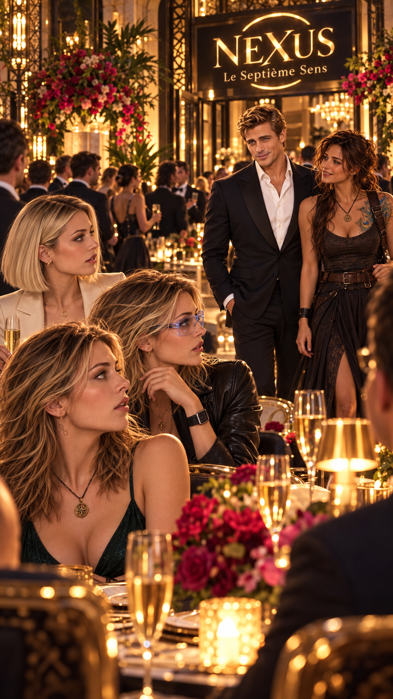
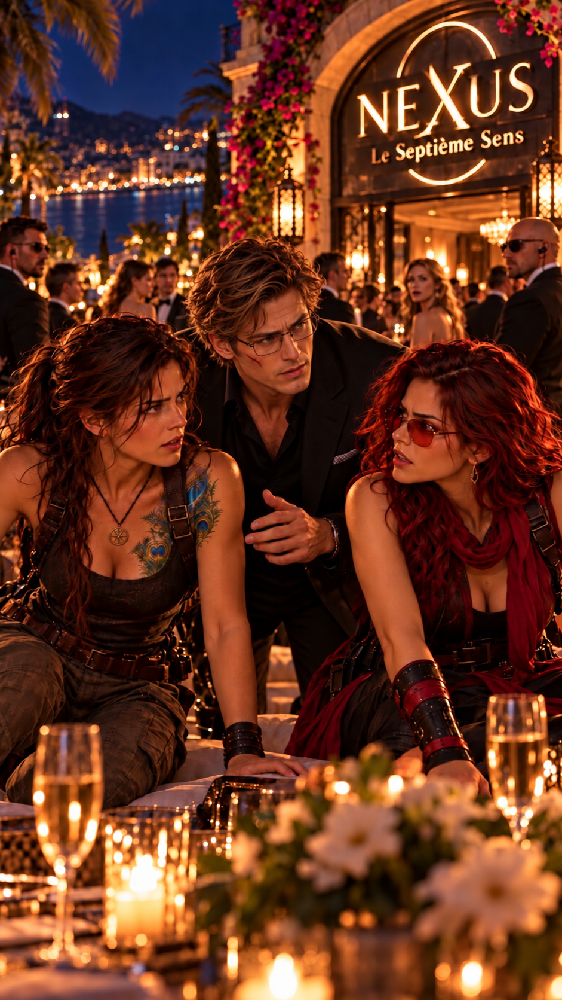
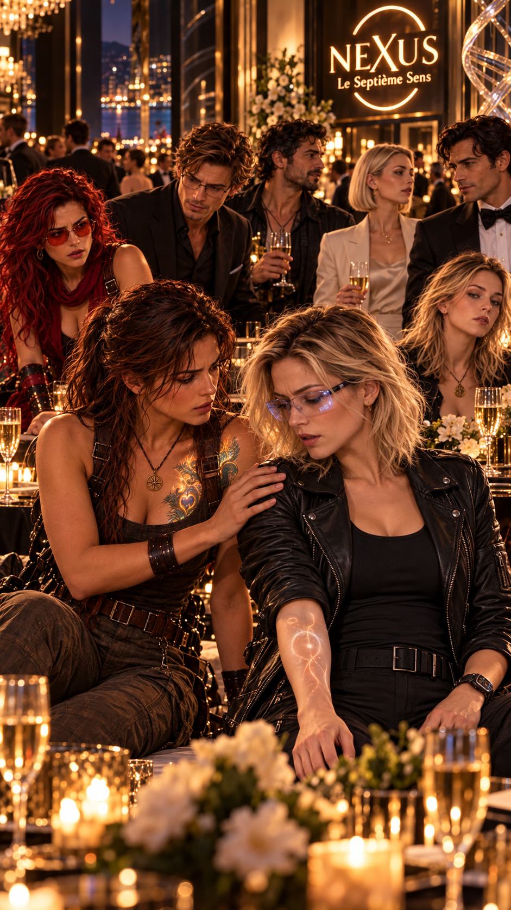

Le jour tant attendu est enfin arrivé.
Depuis le début de la soirée, les invités franchissent progressivement les différents contrôles de sécurité permettant d’accéder au NEXUS — Le Septième Sens.
Une invitation ne suffit pas.
Chaque identité est vérifiée avant que le portail de l’hacienda Awake ne s’ouvre.
Toute personne non inscrite sur la liste des invités est courtoisement invitée à repartir.
À l’intérieur, le spectacle vaut largement ces quelques contraintes.
Le NEXUS provoque presque immédiatement le même effet sur chacun de ses visiteurs.
Un mélange de surprise et d’émerveillement.
Le restaurant est spectaculaire sans être ostentatoire.
La nature semble avoir pénétré dans l’architecture : pierre, végétation, eau et lumière se mêlent à des matériaux plus contemporains.
L’ensemble est luxueux, mais chaleureux.
Les buffets disposés pour l’inauguration sont tout aussi impressionnants.
La cuisine française se mélange à des produits mexicains, parfois de manière totalement inattendue.
Chaque bouchée semble raconter quelque chose.
Les invités viennent de tout le Mexique.
Certains ont même fait le déplacement depuis l’étranger.
Hope circule parmi eux avec une facilité déconcertante.
Elle s’arrête à chaque table, échange quelques mots, écoute, plaisante, remercie.
On pourrait presque oublier qu’une partie des hommes et femmes présents dans la salle surveillent également chaque entrée, chaque déplacement et chaque comportement inhabituel.
Pierre ancienne.
Végétation.
Eau.
Technologie.
Cuisine française mêlée aux produits mexicains.
Et partout, une sécurité presque invisible.

Root apparaît enfin au bras de Clark Stephen.
Peter les aperçoit immédiatement.
— Enfin !
Il s’approche d’eux.
— Le couple star de l’année daigne enfin nous rejoindre.
Root lève les yeux au ciel.
— Ça commence.
Clark sourit.
— J’avais pourtant demandé qu’on reste discrets.
— Avec ta tête affichée sur la moitié des magazines de la planète ?
Peter lui donne une tape sur l’épaule.
— Excellente stratégie.
À quelques mètres, Anna vient de les apercevoir.
Elle attrape brutalement le bras de Betty.
— Man…
— Quoi ?
— Pince-moi.
Betty la regarde.
— Pourquoi ?
Anna désigne discrètement Clark.
— C’est Clark Stephen.
— Oui.
Anna ouvre de grands yeux.
— Clark Stephen !
Betty rit.
— J’avais compris.
— Mais… c’est l’un des acteurs les plus en vogue du moment !
Anna baisse la voix.
— Il est dans toutes ces listes des hommes les plus beaux et les plus convoités de la planète.
Lucy intervient :
— Informations essentielles pour ta future carrière journalistique.
Anna l’ignore superbement.
— Et c’est le compagnon de Root !
Elle regarde autour d’elle.
— Je n’en reviens pas du monde que connaît Hope.
Anna fixe Clark Stephen.
Puis elle continue de le fixer.
Elle semble momentanément avoir oublié comment fonctionne la respiration humaine.
Une voix masculine surgit derrière elles.
— Toutes les lectrices de ces magazines vont surtout être terriblement déçues lorsqu’elles apprendront qu’il n’est plus célibataire.
Anna se retourne.
Elle se fige.
Max Speedman.
— Bonsoir, Mesdames.
Il sourit.
— Max Speedman.
Anna reste bouche bée.
Lucy la regarde avec amusement.
— Respire.
— Je respire.
— Non.
Max rit.
— Je crois que nous venons de perdre la future grande journaliste internationale.
Anna parvient enfin à articuler :
— Je… vous connais.
Max prend un air dramatique.
— Voilà qui me rassure énormément sur ma carrière.
Betty éclate de rire.
Max poursuit :
— Cela dit, Clark est probablement le plus heureux dans cette histoire.
Il regarde Root au loin.
— Il attend depuis des mois qu’ils cessent de jouer à cache-cache avec les photographes.
Puis il ajoute discrètement :
— Maintenant que leur relation risque de devenir publique, il ne lui reste plus qu’à trouver une façon suffisamment spectaculaire de demander Root en mariage.
Anna ouvre de grands yeux.
— Sérieusement ?
— Officieusement.
Max sourit.
— Donc techniquement, je n’ai rien dit.
Max observe les trois femmes devant lui.
Chacune réagit différemment.
— Plus sérieusement, je suis ravi de vous rencontrer enfin.
Il se tourne vers Anna.
— Toi, tu es Anna.
Elle acquiesce.
— Hope m’a beaucoup parlé de toi.
Anna paraît surprise.
— Vraiment ?
— Beaucoup.
— Apparemment, tu envisages le journalisme.
— Oui.
— Très bon choix.
Puis il réfléchit.
— Enfin… très mauvais choix pour dormir correctement, conserver une vie sociale normale et éviter les ennuis.
Anna sourit.
— Ça me convient.
— Alors tu pars déjà avec les bonnes prédispositions.
— Si tu veux, nous prendrons un moment pour discuter. Je pourrai te donner quelques conseils.
Anna semble incapable de cacher son bonheur.
— Avec plaisir.
Max se tourne ensuite vers Betty.
— Betty Flores.
Il lui tend la main.
— C’est un véritable honneur.
— Merci.
— Peter parle tellement de vous que j’avais fini par penser qu’il exagérait.
Betty arque un sourcil.
— Et ?
Max sourit.
— Il n’exagérait pas.
Peter, un peu plus loin, tourne précisément la tête vers eux.
— Il vous décrit comme l’une des femmes les plus brillantes qu’il connaisse.
Puis avec un sourire :
— Et manifestement, il avait également oublié de préciser quelques détails.
Betty comprend parfaitement le sous-entendu.
— Peter parle beaucoup trop.
— Ça aussi, je peux le confirmer.
Max se tourne enfin vers Lucy.
Mais avant qu’il ait le temps de parler, Clark vient de les rejoindre.
— Lucy Adverse.
Lucy le regarde.
Il sourit.
— Je ne pensais pas vous revoir un jour.
Max tourne immédiatement la tête.
— Attends…
Il regarde Clark.
Puis Lucy.
Puis de nouveau Clark.
— Ne me dis pas que ta fameuse flic, c’est elle.
Clark ferme les yeux.
— Max…
Le sourire de Max s’élargit.
— Mesdames, la soirée vient officiellement de devenir beaucoup plus intéressante.
Lucy soupire déjà.
— Qu’est-ce qu’il raconte ?
Max prend un ton solennel.
— Clark nous a répété pendant des années que si le destin lui permettait un jour de retrouver la femme qui lui avait sauvé la vie…
Clark intervient :
— En plaisantant.
Max continue sans l’écouter :
— … ce serait forcément un signe.
Anna commence à rire.
— Un signe de quoi ?
— Qu’il devait l’épouser.
Lucy regarde Clark.
Clark regarde le plafond.
— Je vais tuer Max.
Max se tourne vers Anna.
— Et moi qui pensais que Root serait la seule à devoir recevoir une demande en mariage.
Lucy lève une main.
— Stop.
Tout le monde la regarde.
— Premièrement, je n’ai sauvé personne.
Clark proteste :
— Lucy…
— J’ai fait mon travail.
Puis elle sourit légèrement.
— Et à l’époque, monsieur Stephen n’était ni une star internationale ni l’un des cent hommes les plus convoités de la planète.
Clark rit.
— Peut-être.
Puis il devient plus sincère.
— Mais si tu n’avais pas fait ton travail ce jour-là, je n’aurais probablement jamais passé l’audition qui a changé ma carrière.
Lucy hausse les épaules.
— Quelqu’un d’autre aurait pu intervenir.
— Mais c’est toi qui l’as fait.
Clark ajoute :
— Comme dirait Root, tu as été cette petite main du destin qui a changé la direction de ma route.
Lucy le regarde.
— Le destin fait ce qu’il veut.
Puis elle ajoute :
— Mais moi, je décide pour moi.
Clark sourit immédiatement.
— Toi, Root va t’adorer.
Max éclate de rire.
— Un peu tard pour ça. Je crois qu’elles se sont déjà trouvées.

Soudain, le sourire de Max disparaît.
Son regard vient de se fixer sur quelque chose derrière Lucy.
Peter, Hope et Root discutent à quelques mètres.
Et visiblement, quelque chose ne va pas.
— Excusez-moi.
Max devient brusquement beaucoup plus sérieux.
— Je vous abandonne quelques minutes.
Il rejoint rapidement ses amis.
Betty a également remarqué le changement.
Elle adresse discrètement un signe à Lucy.
Lucy pivote légèrement, tout en continuant à écouter Clark.
Hope donne plusieurs instructions à Peter.
Root semble contrariée.
Puis Hope se détourne.
Root lui attrape le bras.
Pendant quelques secondes, les deux femmes échangent quelques mots.
Hope finit par lui sourire.
Root la relâche.
Max rejoint le groupe.
Quelques secondes plus tard, Hope part seule.
Root échange quelques mots avec Max, puis prend la même direction.
Clive apparaît précisément à côté de Lucy.
— On a un problème.
Lucy ne tourne même pas la tête.
— Lequel ?
— Quelqu’un essaie d’entrer sans invitation.
— Qui ?
Clive sourit légèrement.
— Beau garçon.
— Ça m’aide énormément.
— Très beau même.
Lucy lui lance enfin un regard.
— Clive.
— Et il n’est pas venu seul.
Lucy jette un rapide coup d’œil vers Hope et Root.
— Qui ?
Élie Santalucibel.
Le visage de Lucy change.
Clark a entendu.
— Quelque chose ne va pas ?
Lucy répond :
— Rien que Hope ne semble déjà avoir pris en charge.
Clark observe Hope et Root s’éloigner.
Puis il sourit.
— Alors vous pouvez continuer à profiter de la soirée.
Lucy le regarde.
— Pourquoi ?
— Parce que s’il existe un endroit sur Terre où je ne m’inquiéterais absolument pas pour ma sécurité…
Il désigne le groupe.
— C’est lorsque ces quatre-là sont réunis.
Lucy n’est pourtant pas totalement rassurée.
Elle s’apprête à suivre Hope lorsque Max revient vers elle.
— Respire.
Lucy le regarde.
— Pardon ?
— Hope est simplement partie discuter avec l’ancien amour de ta sœur.
Lucy s’arrête net.
— Élie est là ?
Max sourit.
— Ah.
Lucy comprend immédiatement son erreur.
— Quoi ?
— Je savais qu’ils se connaissaient.
Il sourit.
— Mais tu viens de confirmer qu’il y avait effectivement quelque chose entre eux.
Lucy le fusille du regard.
— Pour un reporter aussi réputé, je trouve la méthode particulièrement basse.
Max éclate de rire.
— Je te taquine.
Puis il ajoute :
— Et accessoirement, mon meilleur ami est complètement fou de ta sœur. J’essayais simplement d’évaluer la concurrence.
Lucy secoue la tête.
— Il n’a qu’à essayer lui-même.
— Enfin une femme raisonnable.
— Et Hope ?
Max retrouve son sérieux.
— Hope et Root vont simplement faire comprendre à Élie qu’il n’est pas invité.
— « Simplement » ?
— Peter surveille tout.
Max désigne discrètement le plafond.
— Si quelque chose se passe, nous le saurons avant même qu’Élie ait terminé de décider ce qu’il veut faire.
Lucy finit par souffler.
— Tu es toujours aussi rassurant ?
— C’est mon charme.
À l’extérieur, plusieurs membres de la sécurité bloquent l’accès.
Élie Santalucibel attend, entouré de quelques hommes.
Hope s’avance calmement.
— M. Santalucibel.
Élie la regarde arriver.
— Enfin quelqu’un de raisonnable.
— Que me vaut l’honneur de votre visite ?
— Je venais voir votre restaurant.
Hope sourit.
— Sans invitation.
— Je n’ai généralement pas besoin d’invitation pour entrer quelque part.
— Jusqu’à aujourd’hui.
Le sourire d’Élie disparaît légèrement.
Hope reste parfaitement calme.
— Je ne vous ai pas convié à l’inauguration du NEXUS.
— Vous connaissez mon nom.
— Évidemment.
— Alors vous savez aussi que personne ne me dit non.
Hope soutient son regard.
— Dans ce cas, je vais vous offrir une expérience nouvelle.
Un silence.
Non.
Quelques hommes d’Élie bougent légèrement.
Hope ne leur accorde même pas un regard.
— Votre frère a déjà commis cette erreur, répond Élie.
Hope ne change pas d’expression.
— Non.
Cette fois, sa voix est plus froide.
— Mon frère a simplement refusé de vous appartenir.
Élie l’observe.
Hope poursuit :
— Vous l’avez fait tuer pour rappeler aux autres ce qu’il en coûte de vous dire non.
Elle s’approche d’un pas.
— Mauvais calcul.
Élie sourit.
— Vous menacez le cartel Santalucibel ?
— Pas du tout.
Hope répond tranquillement :
— Je vous explique seulement que les règles ont changé.
Un silence s’installe.
— Vous avez deux possibilités.
Élie semble amusé.
— Je vous écoute.
Première possibilité :
repartir maintenant sans perdre la face.
Deuxième possibilité :
tenter de forcer le passage et découvrir jusqu’où Hope est prête à aller.
— Vous repartez maintenant.
Hope sourit.
— Personne parmi mes invités ne vous a vu être refusé à l’entrée.
Elle marque une pause.
— Votre réputation reste intacte.
Puis :
— Ou vous tentez de forcer le passage.
Elle regarde brièvement ses hommes.
— Et je vous garantis que la soirée deviendra beaucoup moins agréable pour tout le monde.
Élie la fixe.
— Vous avez du caractère.
— On me l’a déjà dit.
— J’aime les femmes qui savent ce qu’elles veulent.
Hope sourit.
— Alors vous allez m’adorer.
Root, quelques mètres derrière, retient difficilement un sourire.
Élie poursuit :
— Nous pourrions très bien nous entendre.
— Peut-être.
— Mais pas ce soir.
Hope ajoute :
— Appelez-moi. Nous pourrons parler affaires dans de meilleures conditions.
Élie hésite.
Hope vient précisément de lui offrir une sortie honorable.
Il le sait.
Elle aussi.
Finalement, il sourit.
— Très bien.
Puis il prend un ton détaché.
— Je passais simplement dans les environs. J’ai vu l’animation.
Hope ne relève pas le mensonge.
— Quelle heureuse coïncidence.
— Je ne savais pas qu’il s’agissait d’une soirée privée.
— Maintenant vous le savez.
Élie sourit.
— Je vous appellerai.
— Faites donc.
— Bonne soirée, Mme Awake.
— Bonne soirée, M. Santalucibel.
Élie rejoint son véhicule.
Ses hommes le suivent.
Quelques secondes plus tard, le convoi quitte la propriété.
Au-dessus d’eux, presque invisible dans l’obscurité, le Phénix prend son envol.
Root rejoint Hope.
— Alors ?
Hope observe les feux arrière disparaître.
— Premier contact instructif.
Peter arrive à son tour.
— Le Phénix le suit à distance.
Root le regarde.
— Sans se faire repérer ?
Peter semble offensé.
— Tu blesses mon enfant.
Hope rit.
Peter poursuit :
— J’ai également réussi à déposer deux microtraceurs sur son véhicule lorsqu’il était immobilisé au contrôle.
— Seulement le véhicule ? demande Root.
— Pour l’instant.
Peter sourit.
— La patience est une vertu que Hope essaie désespérément de m’enseigner depuis vingt ans.
Hope lève les yeux au ciel.
PHÉNIX — SUIVI ACTIF
TRACEUR 01 — SIGNAL ACTIF
TRACEUR 02 — SIGNAL ACTIF
DESTINATION — INCONNUE
Peter poursuit :
— Ça nous permettra au moins de cartographier certains de ses déplacements et de voir qui il rencontre.
Hope acquiesce.
— C’est suffisant.
Root regarde la route.
— Sa curiosité l’a amené jusqu’ici.
Hope ajoute :
— Sa curiosité et son ego.
— Ses deux principales faiblesses ?
— Peut-être.
Hope secoue la tête.
— Mais ne faisons pas l’erreur de croire que ce sont les seules.
Elle regarde Root.
— Élie est dangereux parce qu’il est intelligent.
Peter approuve.
— Et parce qu’il apprend vite.
Hope reprend :
— Alors nous devons apprendre encore plus vite que lui.
Peter lève une main.
— Attendez.
Il porte discrètement un écouteur à son oreille.
— Il téléphone.
Hope et Root restent silencieuses.
Peter écoute quelques secondes.
Son expression change.
— Intéressant.
— Quoi ? demande Root.
— Une femme.
… grésillement …
Voix d’Élie…
… voix féminine …
… signal instable …
Impossible d’identifier clairement la correspondante.
Hope se fige à peine.
— Tu l’entends clairement ?
— Pas suffisamment.
Peter écoute encore.
— Elle ne donne pas son nom.
Root regarde Hope.
— Tu reconnais la voix ?
Peter augmente légèrement le volume.
Hope écoute quelques secondes.
Son expression devient impossible à lire.
Puis elle retire l’écouteur.
— Non.
Root comprend immédiatement que cette réponse signifie peut-être simplement :
pas assez pour être certaine.
Peter demande :
— On continue à écouter ?
Hope acquiesce.
— Enregistre tout.
Lorsque Root et Hope reviennent vers Betty et Lucy, Anna est installée avec Max un peu plus loin.
Elle boit littéralement chacune de ses paroles.
Hope sourit en les observant.
— Je crois qu’on vient de perdre Anna.
Betty rit.
— Elle ne parle plus que de journalisme depuis qu’elle sait qu’il est ici.
Hope regarde Betty.
— Et votre soirée ?
— Excellente.
Betty désigne les buffets.
— Je veux néanmoins savoir où vous avez trouvé des cuisiniers pareils au Mexique.
Hope sourit.
— En France.
— Vous les avez ramenés avec vous ?
— Une partie de l’équipe, oui.
Lucy intervient :
— Vous avez donc fait venir beaucoup de monde.
— Seulement les personnes indispensables au fonctionnement du restaurant.
Hope hésite.
— Et certaines personnes de confiance pour la sécurité de la famille de Ted et de l’hacienda.
Betty regarde autour d’elle.
— Avec toute la technologie de Peter, vous avez encore besoin d’autant de personnel ?
— Absolument.
Hope répond sans hésiter.
— Une machine peut détecter.
— Calculer.
— Comparer.
— Anticiper certaines probabilités.
— Mais elle ne remplace pas complètement le jugement humain.
Lucy acquiesce.
— Sur ce point, je suis d’accord.
— Même une technologie extrêmement performante reste un outil.
— Elle peut aider à analyser énormément d’informations, mais le contexte, l’intuition, la responsabilité morale et l’interprétation restent essentiels.
Hope sourit.
— Exactement.
Root arrive derrière elles.
— Et surtout, les machines ont un énorme avantage.
Lucy la regarde avec méfiance.
— Lequel ?
Root sourit.
— Elles ne risquent pas de voler le petit ami des autres.
Lucy ferme les yeux.
— Tu vas continuer longtemps ?
Betty éclate de rire.
Root poursuit.
— Tu reconnais donc que ton intervention a totalement modifié le cours de son existence.
Lucy comprend où elle veut en venir.
— Non…
— Si.
— Sans ton intervention, il ne passe probablement pas cette audition.
— Sans cette audition, sa carrière ne démarre peut-être jamais.
— Et sans cette carrière…
Lucy lève les mains.
— D’accord !
Root sourit triomphalement.
— L’effet papillon.
Lucy sauve Clark.
↓
Clark passe son audition.
↓
Sa carrière commence.
↓
Il rencontre Root.
↓
Root se retrouve ce soir au NEXUS.
Une action minuscule. Des conséquences impossibles à prévoir.

Hope allait répondre lorsqu’elle remarque quelque chose.
Au moment où Root touche Lucy, Lucy ramène presque instinctivement son poignet droit contre sa hanche.
Comme si elle craignait que quelque chose apparaisse.
Simultanément, Root a une infime réaction.
Une inspiration plus courte.
Sa main se porte une fraction de seconde vers le haut de sa poitrine, précisément à l’endroit où la boîte de Pandore a laissé sa marque.
Elle transforme aussitôt le mouvement en un geste banal.
Personne ne semble avoir remarqué.
Sauf Hope.
Lucy protège instinctivement son poignet droit.
Root porte la main vers la marque laissée par Pandore.
Hope remarque les deux réactions.
Quelque chose a réagi lorsque Root et Lucy se sont touchées.
Hope observe les deux femmes.
Puis sourit.
— Oui.
Betty la regarde.
— Oui quoi ?
— Nous sommes souvent comme ça.
— On se taquine énormément.
— Tant que le sujet n’est ni essentiel ni blessant.
Root sourit.
— Qui aime bien châtie bien.
Lucy la regarde.
— Continue et tu vas surtout découvrir la partie « châtie ».
Root éclate de rire.
Quelques minutes plus tard, Peter, Max et Clark les rejoignent.
Les conversations se mélangent.
Max parle journalisme avec Anna.
Peter débat technologie et génétique avec Betty, tout en évitant soigneusement de lui révéler certaines choses qu’il sait qu’elle lui reprocherait immédiatement.
Clive raconte plusieurs histoires dont Lucy corrige régulièrement les versions manifestement embellies.
Root provoque Lucy dès qu’une occasion se présente.
Clark observe Root avec ce regard que même Anna avait repéré dès les premières secondes.
Hope passe de l’un à l’autre.
Et peu à peu, quelque chose d’étrange se produit.
Les invités quittent progressivement le restaurant.
Minuit passe.
Puis une heure.
Puis deux.
Les derniers membres du personnel commencent discrètement à ranger autour d’eux.
Mais le petit groupe reste.
Ils parlent.
Ils rient.
Ils débattent.
Comme si, pour la première fois depuis longtemps, aucun d’eux n’avait envie de regarder l’heure.
Lorsque les premières lumières du jour apparaissent à l’horizon, Anna finit par regarder le ciel.
— Euh…
Tout le monde se tourne vers elle.
— Je crois qu’on a légèrement dépassé l’heure du dîner.
Max regarde sa montre.
— Seulement de quelques heures.
Betty éclate de rire.
Hope observe le soleil qui commence à apparaître.
Autour d’elle se trouvent Root.
Peter.
Max.
Betty.
Anna.
Lucy.
Clive.
Clark.
Et quelques mètres plus loin, Hale, toujours vigilant.
Pendant un bref instant, Hope ne dit rien.
Tous ces chemins séparés.
Toutes ces rencontres improbables.
Et pourtant, ils se retrouvaient maintenant au même endroit.
Root croise son regard.
Elle semble avoir pensé exactement la même chose.
Les adieux finissent par commencer.
Promesses de se revoir.
Dernières plaisanteries.
Quelques embrassades.
Puis, progressivement, chacun prend le chemin de son véhicule.
Le NEXUS retrouve enfin son calme.
Mais cette nuit-là, quelque chose venait de changer.
Ils étaient arrivés comme des invités.
Ils repartaient déjà un peu moins étrangers les uns aux autres.